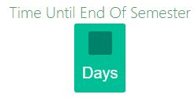

Agile Principles Learned
Throughout the time frame that we have worked on our project, we have ensured that all aspects of our workflow as a team has based every process around the twelve agile principles listed below.
Please Note: this page is so you can view which agile principles that I have referenced throughout my portfolio as so to avoid any confussion or need to look up said referenced principle. This is for the reader's benefit.

Professional Proficencies
Communication With Team Members
Although it is viewed as not being agile, a majority of our communication as a team was conducted on a Facebook group chat that we created. This was so we could remain in contact at all times and be aware of what each team member is doing at the time (i.e. what task, who has completed what, etc). Further more, we have had scheduled meetings on Thursdays as to finish up any tasks or tidy up rouge content before we complete a Sprint. I have found this method of communication and time management to be very effective in terms of motivation and workload-mitigation when it comes to contributing to the project.
However, this has also caused some miscommunication between team members, as I have found myself to increasingly rely more on using the Facebook chat as a means to communicate rather than attend the scrums more frequently. This has also affected how frequent our scrums have been, although this is more to do with dealing with responsabilities and commitments that we had outside of the project rather than the use of the Facebook chat. In addition, we also did not communicate well with the client thus neagtively affected our project's quality in certain areas.
I found that the best way to reprehend this behaviour within our team, is to notifiy my colleagues as soon as possible about attending certain responabilities that would otherwise hinder my attendence to the scrum meetings. Furthermore, I would have to frequently check on our github to view any changes that have been made, or issues that have been created or altered. In addition, our team could have created a set schedule for regular scrum meetings, therefore there would be a better understanding of when we would have a scrum rather than trying to organise one on the day. This could not be made more clear than for us to reflect on the agile principle 6.
6. The most efficient and effective method of conveying information to and within a development team is face-to-face conversation.
I have learned that communication, no matter how small or trivial, makes up the basis of a good functioning agile team and should not be taken so lightly. Furthermore, it is important to have good organisation skills in order to get important team members who need to be present to attend certain scrum meetings, as although communication technology is efficient and easy to access, face-to-face communication is more reliable as each individual can see what their team member is feeling about a certain issue or task and can take immediate action right then and there to fix it. I wish to take this on board and improve upon my own communication within a work based environment in the future, such as maintaining a high level of attendence to all meetings, and contacting the team immediatly to discuss any issues or errors so they can be resolved on the day rather than later on in the week.
Leadership
When it came to proving some form of leadership to the team, I found that I did not really provide any as I seemed to have simply listened and took on tasks rather than voice my opinion of the project or issue out a task. However, I have learned quite a lot about what leadership intails in an agile driven enironment, and as such now know to take on a more assertive and active role within a project team. It is not to say that I didn't show any leadership qualities, as I did manage to take on board criticial feedback from team members and used it to improve upon certain tasks, such as editing the code around the semester countdown clock as the functionality and code eligance did not meet a professional criteria. I believe that the agile principle 9. applied the most to this situation.
9. Continuous attention to technical excellence and good design enhances agility.
Furthermore, I recognize that an agile leader needs to encourage a healthy mindset from their team members, as well as their selfs. This applied a lot to myself, as over the semester I had been going through a great deal of stress and anxiety outside of the work place, and as such had voiced my concern with the team and sought help to resolve this. Further down the track, I had also caught the flu which caused the other team members to take up on of my given tasks. Due to these circumstances, I believe our team, as much as myself, took the appropriate approach to this as we all recognized that I could not be of help if my well being, both physical and emotional, was at risk. In addition, we also knew that no matter the circumstances we had to have a completed functioning software, hense why my work load of that week was cut in half so I could still produce something from home that did not require too much demand to complete. I carried out this course of action based on the agile principle 5, which mentions that projects should be built around motivated individuals and to give them a healthy environment and the support they need. Furthermore, this process also alludes to the agile leadership concept shown below, of which I believed to be an essential ideaology to use within our project team.
Agile Leaders inspire others to bring their best selves to their work. They understand that emotion is an important part of the human experience, and when individuals work with their emotions, they achieve more of their potential. Click Here To View Quoted Source.
Overall, the knowledge I have taken from this has allowed me to learn what it means to take on a leadership role in an agile team. I have learned that being a leader intails high quality thinking in which they engage with their individuals to help resolve an issue through critical thinking and high quality time management. A good agile leader also recognizes which tasks has the highest priority that requires more attention, thus giving them that ability to divert their time working on one task to assisest others who maybe working on high value tasks. They also strive themselves to live up to such virtues as being humble, empathetic and share compassion towards their team members, however, they must be able to work on themselves before working on others. Finally, a good agile leader needs to be able to take on critical feedback from their colleagues and utilize that feedback to better improve the overall task and project, no matter how negative that feedback may seem. Although I did not show all of these characteristics within our team, I wish to take on board this lesson and utilize it with any further project I may work on in future, as well as take up a much more active leadership role to benefit others around me as well as myself. This way, my ideas and opinions will be voiced more often, and I will improve my adaptability when in comes to sudden changes to the workflow or the project in general.
Team Work
As a project team, we understood overtime who worked well in certain areas and who found certain roadblocks to either unfamiliar technology or programming languages. Essentially, when it came down to that we would offer up assistence to enable the struggling individual to better perform their task that may involve such technology they have never used before. This was more apparent when we were introduced to the website framework known as Laravel, in which none of us knew anything about. So when it came time to shift over the skeleton website framework that I designed to the Laravel engine, quite a few changes had to be made to accomidate our website. Be that as it may, we fully understood that we needed to maintain to idea of accepting changes in development and adapting to that change for the benefit of the project as well as the client, thus utilizing the agile principle 2.
2. Welcome changing requirements, even late in development. Agile processes harness change for the customer's competitive advantage.
Although we all worked on individual tasks, we frequently offered each other assistence to better perform on our task. For example, during the initial development of the "Draft Website", my task was to create a skeleton framework both in html and css for use to utilize and contain our general content. However, I felt slightly guilty for picking such a simplistic task as Josh was assigned the task of finding a more professional workflow to deploy the "Draft Website" on which seemed more demanding than it seemed. Therefore, once I completed my task (with a few minor fixes within the CSS) I offered Josh a hand with finding an easy to use workflow, as well as offered to look over any ideas he had in case the workflow seemed too complex or had irrelavent functions not otherwise suited for our product. This was made clear with all other aspects of the project, as we decided that although it would be nice to utilize such things as Bootstrap or JQuery responsive tools for our project, the time frame just did not allow such luxuries, thereby standing with the agile principle 10.
10. Simplicity--the art of maximizing the amount of work not done--is essential.
However, at times we did not always convey good team work, mainly towards seeking out assistence. This was made apparent muliple times within Sprint 2 (see Sprint 2 Retrospective within our repo) in which a majority of use did not ask for any assistence with roadblocks when we should have, rather than leaving the issue unresolved until the last minute. Other cases of this poped up once in a while during our other Sprints, however, mostly occured during the early stages of development. Furthermore, I found that too much time spent on helping one individual can greatly affect the time frame given to you to be able to complete your own task. Essentially, I believe there were times we did not adhere to the agile principle 11. In this case, what we did to prevent any future cases that lacked team work after Sprint 2, was that each individual had to at least make an attempt to complete as much of a given task as possible by a given time frame, which we made it clear that Wednesdays and Thursdays was when we would show each other our work and finish up that task together.
11. Business people and developers must work together daily throughout the project.
As a functioning team, I believe that we had a good working relationship with one another, of which I was glad to be a part of. Even though there were some disagreements along the way, we encouraged each other to always perform to the best of our ability, especially when it came to high value tickets given to each other. I believe that I showed aspects of this attribute towards others, however, not so much to myself as I always doubted my own ability to complete a task or of the quality of the finished function. I wish to improve immensely on this in future as this type of mind set is counter-productive to a working environment and causes more harm than good to the team as a whole. Therefore, in the future I plan on ensuring that I am of sound healthy condition that will allow my team members to find me reliabile enough to contribute and execute a task without allowing outside distractions or responsabilities to interfere with the project overall. During this process, I have learned and taken on board the fact that no individual can successfully develop anything without consulting their team members for advice, assistence, or to simply confirm that your work is sufficient enough to be intigrated into the project workflow. In addition, I've learned that no matter the circumstances an agile team must always follow the principle 12 without fail.
12. At regular intervals, the team reflects on how to become more effective, then tunes and adjusts its behavior accordingly.
Time Management
Overall as a team, I believe our time management frequently fluctuated during certain intervals but never to the extend that we would snowball our project off course from the set schedule according to each Sprint's valocity. As stated before, in each Sprint when we were given our respective tasks, we would ensure that we would complete a majority of it or finish it by Tuesday to show the client what it is we are working on. This way we can get sound advice from the client within the early stages of the development process, allowing us a good time frame to make any changes to the task to satisfy the client's needs. Wednesdays and Thursdays were put aside to show each other our work and to fix any known bugs or errors within the software area that the task was made to do, thus we were able to utilize this set schedule efficiently and effectively when it matter the most. During this scheduling with our workload and with the client, we ensured to maintain the practise of agile princple 1 at all times that we were able.
1. Our highest priority is to satisfy the customer through early and continuous delivery of valuable software.
As we had established what days were put aside for what (i.e. Tuesday: Client Day, Wednesday & Thursday: Final Editing/Debugging), I typically used my mobile's Alarm tool to remind when to work on a task and when to take a break. While my main method for scheduling my tasks was by using my Laptops built-in calender and notification system. This is mainly because I am on my Laptop the most, ergo it made sense to apply this method to it. My mobile alarms were set for certain days and times, thus allowing me to maintain a good work schedule without "burning out". I found these methods very helpful as well as efficient in splitting my workload into a nice set time frame that doesn't demand too much time or clash with other activities, such as class.
Furthermore, my scheduling method allowed me to readjust any event that may not be relavent or no longer planed to occur. I also found it pretty useful to see when I needed to be prepared for the next Sprint Retrospective, of which I labeled it with its own icon to show its level of importance. In addition, I have these events emailed to my email address so I get a notification on my mobile just in case if Im not on or near my Laptop. I had also ensured that due to my part-time job occuring on weekends and half of Mondays, I am to not work on anything due to my tired state of mind. This is so I would produce working software more efficiently after some good sleep, as I have to get up at 5:30am on Monday to prepare for work which is not at all ideal to carry out project tasks with this sleep schedule.
However, this did not take into account of any changes that would later on occur during our project, some of which could not be avoided or required our full attention to fix. Furthermore, this time management methodology I made really only applies to myself and would not always work with the other team members' schedules, thus each person's individual method of time management would quite often clash with another's. The worst cases being that their attention would be on something else rather than their task and their schedule would cause them to be absent or only present for a very short period of time. Although we completly understood that each person had their own responsabilities outside of the project, this type of scheduling and time management did not work well with our group and would of course force those remaining to work around the issue or worse, have to pick up a person's task for them.
In my opinion, our time management should have been a fixed method that we all used so we could mold it around everyone's own schedule, as not everyone could attend scrums or the scheduled Thursday meetings. Would this have been put into place, I believe our Sprints would have had a 100% completion rate far more often and would not have one or two old tasks from a previous Sprint, In addition to this, we could have followed through far more effectivly if we had utilized agile principle 3 our workload could have been managed better, as well as allowed us some flexibility between Sprints.
3. Deliver working software frequently, from a couple of weeks to a couple of months, with a preference to the shorter timescale.
If I was to work on any future projects, I wish to establish with my team an immediate and flexable scheduling method so that we can be insync with one another on what is due, when to complete it, and how much of our time should be diverted to high priority tasks. For me, I will remove any unnecessary distractions that would otherwise be counter-productive, and I wish to displace my time management between various tasks and issues in order of importance and due date. This way, I will have a sufficient enough work flow that won't clash with other team members and should ensure that all tasks with high priority levels or closest due dates are completed first to prevent my workload from piling up and cause my team members to pick up my unfinished work.
Motivating Self And Others
When it came to actually carrying out a task or issue, I found it crucial to ensure that I had a possitive attitude within the work place, as well as modivate myself with a good method. The mothodology I used to modivate productivity within myself was the idea that should I fail to produce any work or complete my task insufficiently, then my team would then fail and as a result the work load would pile up overtime. By consistently enforcing negative reinforcement upon myself, it allowed me to be fully invested into my set tasks with the idea of "The Worst Possible Outcome" in the back of my mind, telling myself that I must avoid that outcome no matter the circumstances. Whereas with modivating the team as a whole, I found that it was pretty simplistic to be modivated as we all knew each other on a personal level which allowed for a more laid back approach during the beinging of the project. It also helped with working together as we knew what each of us were capable of, ergo allowing for good work ethic and low levels of stress. I believe our key method of motivation within our team was using humour and casual conversation to ease the mood in the work place, for example, rather than give our team name something sensable or professional we named ourselves Team üêà, which I personally found quite funny. It only added to the humour when the GitHUb website developers saw that our cat emoji wasn't working with their framework and thus added in extra code that allowed emojis to display on the GitHub site.
In terms of things that went wrong, I believe the only downside with modivation was that I contributted a lack of motivation towards other team members. This was due mainly to focusing solely on myself more often rather than encouraging others around me, which would then create a domino effect as respect and encouragement works both ways. Therefore if one team member wasn't modivating themselves or others, then the rest would soon follow suit. Although this was usually a rare occurence within our team dynamic, it still would have been more productive to utilize agile principle 5 as a project cannot be successfully produced with an unmodivated team.
5. Build projects around motivated individuals. Give them the environment and support they need, and trust them to get the job done.
I've learned from this experience that in order for tasks, as well as the project as a whole, to be successfully completed there must always be high levels of self-modivation and trust amoung team members. It is also important to recognize which scenareos are appropriate to have casual attitude, and when to behave on a professional level within the work place, thus avoiding the possibility of going off track from the task at hand. In future, I wish to be far more involved with others on their tasks and to maintain a healthy attitude in the work place environment so that I do not affect others negatively.
Technical Proficiencies
Technology I Learned
Originally, I was going to begin teching myself how to use Jackyl frameworks, however, when we were introduced to the Laravel framework and the GitHub workspace I felt it more essential to learn more about these two key components as it would be far more prodtuctive and benefitcial to the team. Furthermore, I felt that due to consistent changes to our project, trying to incorperate a new piece of technology into the mix would essentially be counter-intuitive to the overall project. In order for me to understand how to set up Laravel, I went about looking up this tutorial whenever the need was there so I would get into the habbit of knowing how to view our site, update it, and be able to access it from other devices other than the ones supplied. Although I did not follow the tutorial completly as we were supplied resources that guided us on how to set up the basis of the framework. The primary challenge I faced with learning Laravel was on how it connects to a database for our semester tracker to function. This was required for me to understand as a lot of the values we had were hard coded and needed to link to the database in someway, of which one of my tasks required that outcome. I gained assistence with this task from my team members, as so I could better understand how Laravel pulls data from the database as well as manage to get the task complete. By learning how the syntax works, as well as the general workflow, I believed that I was better equipped on Laravel's front end workflow rather than the back end (i.e. server based) aspects.
With learning about GitHub workflow, I was already slightly familiar with the general makeup of it as I had used this workflow in Professional Practise Two, or something similar to that. The main challenges I faced with it was understanding how to counteract merge conflicts and avoiding version control errors, of which more often than not I encountered various conflicts that would grind our project folder heirarchy to a halt. Essentially, this was due to me not operating Laravel correctly or pushing the database when neeeded thus create merge conflicts that would have changes days behind the master branch. To overcome and avoid such an issue, I made sure to make regular pulls and pushes when any changes no matter how small were made to my own repository. This way, I could take this testing on my own repo and incorperate my knowledge gained from it into handling the wrokflow of our project. As with the Laravel framework, much of what I learned was due to the resources supplied to use on Moodle.
Implemented Programme
Although not very complex to create, I implemented a set CSS and html Skeleton for deployment during the early stages of the project, in which from there we had built the basis of the whole project upon. There's not very much to say about the skeleton, however, I found the main roadblock with it was when it was incorperated into the laravel framework in which major modifications had to be made in order to fit well with the overall framework. As a result, large chunks of the original skeleton were scrapped in favour of responsive design and dynamic aspects replaced the skeleton basis, of which I struggled to modify such changes. Furthermore, due to me being ill during much of this process, I could not work on some of the changes made. The other programme I implemented was the semester clock function created through javascript, which would take a set start-end date for the semester and inform the user how many days left until the end of the semester. One challenge that was quite easy to overcome was how to display the clock in a way that would be dynamic for the website. As it also included CSS to go with it, I had to work on editing both a CSS and Javascript file in order to sync up with the clock's display. 
As you can see, the layout of the clock was not at all dynamic to incorperate into the final product, and also contained hard coded values that I later on discovered down the track. To fix this, I removed a lot of the CSS around the clock adn simply made it display as a normal column of text, then made sure that the column/clock floated right underneath the menu bar, this way when the website is used on say a mobile device, the clock will remain in that position without overlapping other aspects of the website.
Deployed Dependencies
When working on the project along side my team, I found that my key role was to ensure that CSS and Javascript was up-to-date, as well as meet a set professional criteria. As stated before, I deployed our skeleton framework with a pre-built CSS stylesheet that we built upon and molded to adapt to the Laravel framework. This was so all pages would use the same styling and layout rather than supply seperate stylesheets to each page, of which would simply add to the ever increasing workload. While working on the CSS, I ensured that it would be dynamic and simplistic enough for other team members to add to or edit along side their respective tasks. For example, the CSS was laid out in a logical workflow, keeping each div, class and id seperate through comments. This allowed people like Josh to work with the CSS without any issues when he deployed the updated html and CSS framework. The only challenge I can think of during my work on the CSS is that due to poor version control, I would have to check in with other team members to ensure that any changes they made did not interfer with the CSS layout. This issue also occured when the FAQ page and the Team Info page did not meet the dynamic criteria that we were aiming for, thus to fix such issues I worked alongside Joe as his skill level with CSS and Javascript was beyond my own and therefore trusted him immensly with fixing these type of issues. Furthermore, I would usually consult Joe about the degree of layout that need to be changed in case I needed a second opinion on the subject before going ahead with the editing.
The other dependency I worked on was the Javascript layout, however, I did not deply all Javascript code as it was more of a joint effort. I aided in the deployment as I previously stated to the team that none of the Javascript should be inline code, as it is poor practise in web development and can put the website's integrety at risk. Ergo, I ensured that each Javascript code was placed in seperate js files and were linked approriatly to the pages that would use them. There were no challenges with the deplyment of the Javascript framework, as it was simplistic and clear to the team what it was we wanted each page to dynamiclly do, however, I faced a key issue which I wish to touch upon later.
System Administration Provided
Like the rest of the team, I provided system administration with the workflow of our GitHub repository as all team members were commiting changes and content to one location. It was decided as a team that during any editing process, we would create a new branch with our given ticket as the name allowing us to clearly see which branch was editing which aspect of our website. The workflow was managed by all team members, however, as mentioned before I would look over our code to ensure there are not errors that were overlooked which I would regularly do before working on anything. Before any deployment that had to do with my tasks, I would carry out some basic testing on my own seperate copy of our project of which I created on my Laptop during the early stages of the project, this was done so that when it came time to merge or push any changes, I would be able to so without any errors. However, this was only ever worked on during the early stages, and I would later on stick to creating a new branch for editing purposes. Like the rest of the team, the key challenge faced with was when there were merge conflicts that would need resolving, but the difficulty of this challenge depended upon the scale of the merge conflict and how far back the changes were. This made it very difficult to determine which lines of code to keep as most changes would end up being too complex or be barely recognizable when comparing the changed code with the current code. Although difficult, this was usually sorted as a group and usually with the person who made the changes, thus allowing us to clearly see what it was that could be kept. I would have liked to have been more involved with administration, however, as I worked more on the front end of the website I managed more around version control than that of other project sections.
Configured Hardware
In terms of configuring hardware, I did not really work on this area as Joe, Corey, and Josh worked on the server side of things. However, what I gathered from it was that they were configuring the live version of the website via connecting to the mariadb database server service. I would like to work with configuring hardware in the future, as my confidence with server based content was not high enough for me to offer any assistence on it. Furthermore, I wish to better my knowledge around it so I can have a better understanding around the back end aspects of web development.
Advanced Version Control
As I worked largly on the front end of the website, most of my work revolved around ensuring that all CSS and Javascript was up-to-date. This involved around working on a variety of stylesheets in the early stages of the project, and then taking that CSS and placing it in an logically organized stylesheet. As mentioned before, I worked alongside Joe in this area as often I would be absent due to either being ill or due to schedule clashes, in which case when I worked on the styling for the FAQ and Team Info pages Joe had to take up those tasks as I was ill during that time. A key aspect that I worked on with Joe, as well as Corey, was the coded in dates and times within the Javascript that would tie in with the semester tracker product. However, we were faced with a major challenge around this as we had soon found that we could not have hard coded values as the point of the Javascript was to pull data from the database and then display it after the input. As a large chunk of the Javascript was hardcoded, I had to inlist some help from Josh to fix the coded iun semester titles for each semester table, of which it on its own was time consuming. I managed to fix the semester title display by using a hidden variable and then using that variable to pull information out of the database. Thus whenever the user adds in a semester, the semester tables will then display the correct set semester. For example, if the user entered a semester that started in one year, then another the following year the Javascipt would read that input and display the correct year beside each semester (i.e. Semester Two 2018, then Semester One 2019). Unfortunatly, due to the time constraints we had during the final Sprint, I could not fully remove the hardcoded values and was later decided as ateam that we would focus on more immediate fixes rather than those that would take too much of our time to completly fix.
Furthermore, Corey and I had huge issues trying to remove the week/date display that we wanted to place with more relevent data into the menu bar, as we had soon discovered that even by removing the entirety of the Javascript that displays that line of code as text it will still remain in place. I found this to be quite alarming, so the best and most immediate fix that Corey and I could come up with was to give the week/date display a hardcoded date (even though its poor practise to do so) and do our best to remove the errored display. Would have we had more time, I would have liked to have removed hardcoded values from the first time we established our database thus the overall product would have meet a more satisfactory standard and therefore better its quality as a whole.
CV details
Callam Josef Jackson-Sem
Education
Bachelor of Information Technology Currently studying under this course to improve upon programming and web development skills. I have been involved in such project work as:
- Developing a functioning WordPress website for a client.
- Carrying out security and testing procedures for a student based app.
- Worked with Professional Development teams to produce multiple product(s).
Much of the Bachelor has heightened my passion for developing applications within a variety of platforms for both programming and web design purposes. Furthermore, it has allowed me to better grasp working in a development team and to apply professional behavior within a workplace environment.
Volunteer Work
I am currently working on developing a Warehouse Management System using the programming language Python, of which I have been asked to attempt deployment by the Director of Sales from Stalco Inc, located in Toronto Canada.
NCEA Certificate Levels 1, 2 & 3 Obtained through studying at Kavanagh College, of which had gained NCEA level 1 with an excellence endorsement and was awarded with the Academic Blues in 2012.
Certificate in IT Service & Support The course was taken in 2016 to gain entrance into the Bachelor of Information Technology.
Personal statement
Currently, I am studying at Otago Polytechnic under the Bachelor of Information Technology as a second year student. I am highly interested in web development and programming, as I wish to improve upon these areas through work experience. I also work at Moyle’s Fresh Choice in Green Island within the butchery department.
Work Experience
Butchery assistant, Moyle’s Fresh Choice, Dunedin
March 2012 – Present
Working within a supermarket butchery has allowed me to gain experience with customer service, as well as improve upon general work ethic. I am usually tasked with assisting in keeping the meat section organised, as well as ensure that all products have been rotated regularly.
Strengths and achievements:
- Able to carry out a given task in a fast and efficient manor.
- Customer Service skills.
- Kiwi Host First Impressions Certificate.
- Maintaining time management/Work ethic.
Interests and hobbies
I have a very high interest in game development and web development, as I tend to work on web templates in my free time. I enjoy going tramping whenever the opportunity arises, and enjoy a good fantasy or science fiction book.
Journals
The Journal Entries below are to show how we established ourselves as a team, and what key decisions we made that we would later on stick to throughout the project. I did not see the need to record every single meeting or detail during our project, so I only wrote about the starting point of the project.
Journal Entry 1: Scrum Meeting And CSS Layout
Date: August 13th Monday
Time: 2:50pm - 3:30pm
Location: D202 Otago Polytechnic
Details: Began our first official team meeting today, of which we had discussed which tasks had been completed and our mode of communication. We decided to create a Facebook chat group as opposed to more traditional methods of communication within a professional team-based environment, as this way we could maintain consistent contact with one another across multiple platforms (i.e. PC, mobile, iPad, etc) that would incorperate the use of Facebook. Further discussion involved my Deployment task, of which had been completed, as I had found a pre-built CSS framework that we could operate with and build our content upon. This is so we do not waste too much time stylising the framework and more time on organizing which sections will contain which content, such as whether or not we require a home page. Our meeting closed on setting a collective goal of having something to display by tomorrow, both to the client as well as the team.
Goals Completed: Deployment
Goals Set: Pre-Built CSS & Testing
Journal Entry 2: Class Time And CSS
Date: August 14th Tuesday
Time: 10:32am - 12:00pm
Location: D202 Otago Polytechnic
Details: We had gathered in-class as we were having our usual scrum meeting before we began on our work. I decided to share my findings on the pre-built CSS stylesheet that I searched up during the weekend. Although relativly simplistic, we found that this framework did not fit well with our current styling that we had currently set into place. This in turn had caused small levels of disappointment within myself, as I felt as though I had failed the team and in turn wasted valuable time. However, they reinsured me by making slight modifications to the layout we have rather than try to bruteforce the CSS into our html. Due to this outcome, I have found that I need to be more organized with my set tasks, as well as to not do excessive work that may collide with the Project's scope. Furthermore, I should instill trust within my skill level, as we decided to stick with the CSS skeleton that I created rather than attempt to make a new one.
Goals Completed: Pre-Built CSS & Testing (Conflicts)- Initially, this was to prevent any work around thus all styling would be completed, but as stated before, prooved to be a waste of valuable time.
Goals Set: None At This Moment
Journal Entry 3: Sprint 1 Completion, RetroSpective Review
Date: August 16th Thursday
Time: 3:05pm - 5:00pm
Location: D202 Otago Polytechnic
Details: Our first Sprint has been completed, in which we collectivly discussed how things went and what can be improved going forward. In terms of our communication, we managed to pass on information in a timely mannor and was conveyed efficiently for each of us to easily understand. Our website came together quite well once we had sorted out the root folder, in which was quite disorganized before hand. We decided that in future we must have more frequent scrums with places and times set, this way we can attend them more frequently rather than asking if there is one on the day a scrum should take place. We did not communicate well with our client, which needs to happen more often to adapt our tasks to fit their needs. Furthermore, our team needs to clearly identify who is doing what at the beginning of the Sprint. We do expect the valocity of each Sprint to increase overtime, as the workload will become more complex.
Goals Completed: At This Stage, None.
Goals Set: Semester Countdown
Journal Entry 4: Sprint 2 Establishing Roles
Date: August 21st Tuesday
Time: 10:05am - 12:00pm
Location: D202 Otago Polytechnic
Details: Not much occured today, as each person's task had already been set and has been currently working on in class. Currently I am working on the countdown clock, in which I have coded up a small javascript draft to do some testing with.
Goals Completed: Current Task Still In Motion
Goals Set: Complete Clock By Next Class
Journal Entry 5: In-Class Work & RetroSpective Review
Date: August 23rd Thursday
Time: 3:05pm - 5:00pm
Location: D202 Otago Polytechnic
Details: We came together during this retrospective to discuss mainly on the short comings we had as a team, as well as individuals. For me, my completed clock task needed to be re-edited countless times as I had produced inapproriate code, disorganized flow of javascript, and just overall display did not meet professional criteria. The clock was modified to meet such criteria, but was discussed that I cannot produce something so low level in which case I will better myself on in future tasks. We discussed that when it comes to our set tasks, we need to analyze what the user story is asking, think about how to carry it out, and each of us must have something to show each other during the next meeting. This is so we can think critically and approach the tasks as professionally as possible. To encourage such a mind set, we established that each Tuesday will be set for displaying what we have so far to the client, while as Wednesdays and Thursday are to work on final debugging for each task. We made this decission so that we can improve client-to-staff relationship as well as communication, plus it allows us to have a set timeframe to get things going.
Goals Completed: Semester Clock Countdown
Goals Set: As A Team, All Have to work on Laravel
Journal Entry 6: Laravel Framework
Date: August 28th Tuesday
Time: 10:13pm - 12:00pm
Location: D202 Otago Polytechnic
Details: We have begun incorperating our current website into the Laravel workflow, in which all team members are working on. I have discussed with the team about how the countdown clock is being displayed, and have decided upon displaying it in just simple text rather than have it sit inside a block with green background. The background was removed as the styling of it clashed with not only our workflow, but the Laravel framework as well. I have aslo made some adjustments to the CSS stylesheet, so that the layout engineer can easily manage it without any roadblocks. Furthermore, I had consulted with the team about our CSS and Javascript situation and had said that rather than have inline styling within the html, we should instead place the CSS and Javascript within seperate files and link them on their respective pages. This was done so that the elegance and integerity of the code would be layed out in a professional mannor and would avoid any styling and code clashes. Additionally, this was due to the fact that some of the CSS and JAvascript had similar tag lines and could cause errors should the framework confuse which tags belong to which function or style. Plus it is good programming edicate, and is aestheticly pleasing to work with tidy code.
Goals Completed: Established Laravel Workflow
Goals Set: TBA